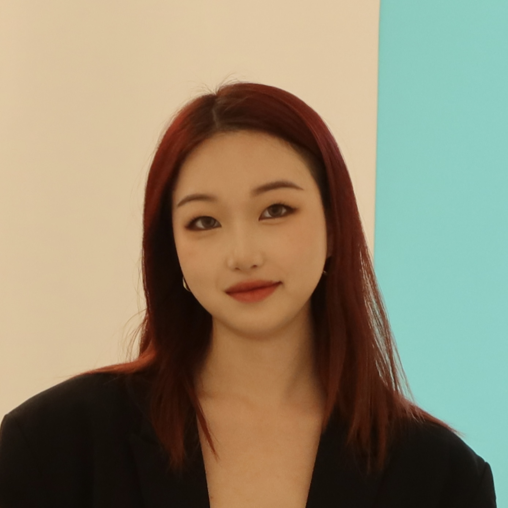

Interaction & Experience Design
Interfaces, user flows, interactive environments, and physical–digital experiences.
About
Designer, artist, and creative technologist.
I create interactive systems, visual narratives, and physical–digital experiences that explore how people relate to technology, materials, environments, and one another.
Based in Los Angeles
MFA candidate, Media Design Practices — ArtCenter College of Design

Interfaces, user flows, interactive environments, and physical–digital experiences.
Creative coding, web prototypes, p5.js, Unity, TouchDesigner, and AI-assisted workflows.
Identity, editorial design, data visualization, typography, and image-making.
Nonhuman perspectives, emerging technologies, environmental systems, and future-world building.
My practice begins with close observation. I look at how people interact with objects, environments, technologies, and one another, then translate those relationships into visual systems, interfaces, and material experiences. I am especially interested in work that connects critical research with experimentation and poetic visual language.
I began in studio art and graphic design, working through painting, drawing, printmaking, and visual communication. My current practice expands that foundation through interaction design, creative technology, critical research, and physical prototyping.
For collaborations, creative technology projects, and research-led design inquiries, get in touch.